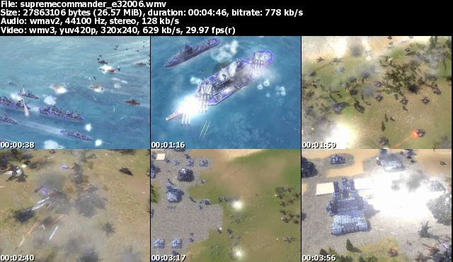
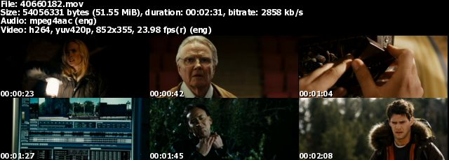
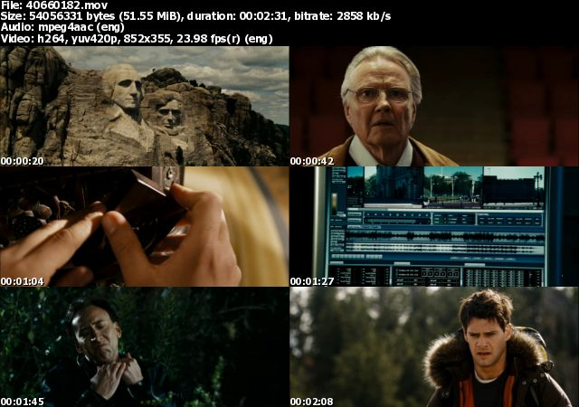
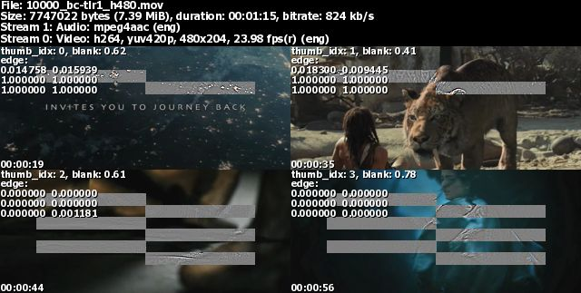
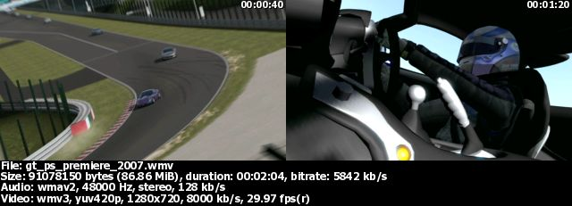
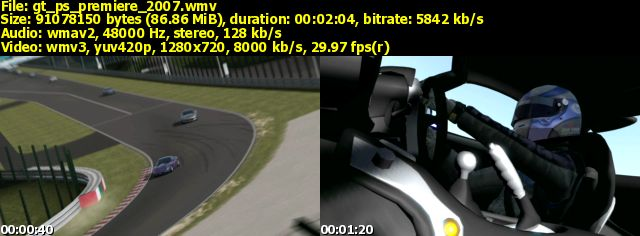
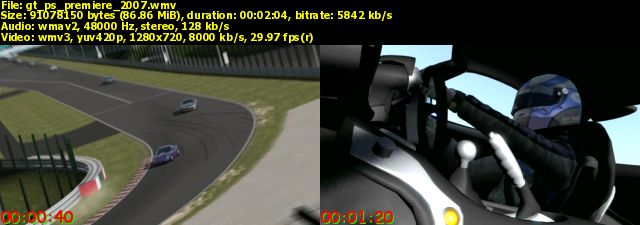

-w width : width of output image-c 3 -r 10-c 5 -s 65-r rows will override -s
seconds if used together-s seconds) is small. We should
keep it above 30.-w 1024
-c 3 -s 120-f fontfile). The
default is set to tahomabd.ttf which might not exist in
non-Windows systems. If you dont have a TrueType font, you can
turn the text off by using -i -t.-f fontfile).
ARIALUNI.TTF and Cyberbit.ttf
seem like good ones.
-B seconds and -E
seconds can be used to omit the beginning and the
end of movies. We dont really want to see those credits, do we?
:) Or we might not want to show how a movie ends.-h minheight of each shot can be set.
mtn will reduce the number of column until each shot meets
minheight. For example, lets say we usually want 3 columns
like:,
so we'd normally use
-c 3. But when we
encouter a wide screen format, thumbnails will come out
like:.
Oops. Isn't that too tiny? So, with something like
-h
100, we'll get:.
Isn't that much nicer? :) Now we can always use
-c 3
-h 100 and thumbnails will be ok for all aspect
ratios.-b percent -- 100% (1.00) is completely
blank, 50% (0.50) is half blank. So, to evade shots which are
80% blank, use -b 0.80. For example,
instead of getting blank shots: ,
,we can get (with
-b 0.6 option):
After the introduction of edge detection, we might want to use that instead, and leave this at the default value.
-D number. Shots without edges are blur.
The higher the number, the more edges mtn will detect. As a
result, with higher numbers, slightly blur shots will be more
likely to get through. Try -D 4,
-D 6, or -D 8 and pick
the one you like (I like -D 6). Note that
this feature is not perfect yet and it requires blank screen
detection. For example, instead of getting blur (no edge)
shots: ,
,we can get (with
-D 6 option): .
.Internally, mtn does something like:
.
It only detects edges in those grey boxes to speed things up.
-k RRGGBB (in hex) sets the background
color. So, -k 0000FF would produce a blue
background.-L info_location[:time_location] can be
use to change the locations of the text [time location is
optional]. Locations can be 1=lower left, 2=lower right,
3=upper right, 4=upper left. So, -L 1:3
would give us:
-F
info_color:info_size[:time_font:time_color:time_shadow:time_size]
sets the font formats [time format is optional]. The color
needs to be in RRGGBB (in hex) format. -F
FFFF00:10 gives us:.
And
-F
FFFF00:8:comicbd.ttf:ff0000:00ff00:12 gives
us:.
Please note that only time stamp fontfile is taken from
-F; info text fontfile is still specified
by -f. (trailers taken from yahoo,
pocketmovies,
gamershell)-O directory saves output files in the
specified directory, which will be created if not exist.
Neccessary when the movie files are in read only directories,
e.g., CD's/DVD's or mounted image files.-W option omits files that already have
thumbnails (by checking the existance of the output
files).-N info_suffix saves file info (name,
size, length, codecs) and text given by -T
text to a text file with the specified suffix.-a aspect_ratio overrides input file's display aspect ratio (DAR). *new*-z: always use seek mode, -Z: always use non-seek mode. Seek mode is much faster but doesn't work very well when time step is small; while non-seek mode is slower but good for small time step or small clips. Normally mtn will automatically use the appropriate mode. When it's not sure which mode it use, it'll use seek mode and print out a message.*new*